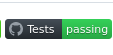
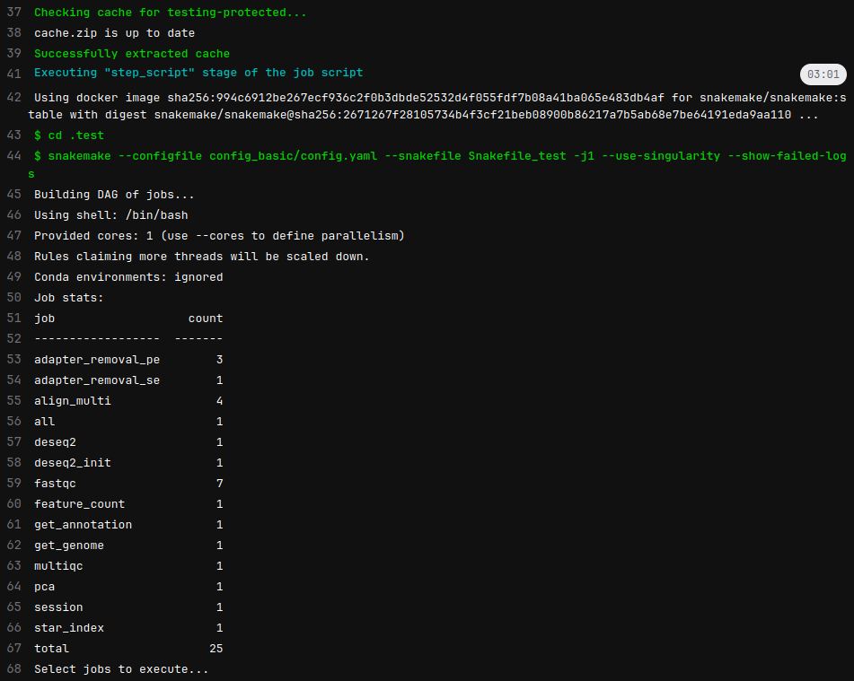
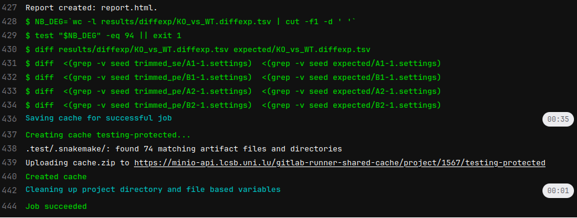

Rationale
Testing software is necessary and I always do it too late. Looking William Landau coding (through watching his {targets} repo) it is clear that the best way to develop is to write as the same time:
- code
- unit tests
- documentation
When struggling on the first item, it appears difficult to concomitantly write the corresponding tests. Not to mention that documentation could be not even considered in the first place.
This works somehow but suddenly, one repo could gain attention and documentation becomes an extended README. Then later, a fresh release is proven to break things, and that’s bad when this is reported by users and not detected by the author.
Long story short, I wanted my snakemake template for bulk RNA-seq to be tested, at least a short pipeline on fake data to catch obvious mistakes.
By the way, Snakemake is a Python framework for managing bioinformatic workflow. That would deserve a post on itself.
Inspiration from the experienced people
The template is derived from this one and they implemented testing. Apart from the great looking green badge, it is what I am after: run the pipeline on small data of the Yeast genome.

Looking at how it is done in their GitHub Action file, the relevant part is:
They are doing more testing but with the same structure. The annoying part to me is the:
Because it abstracts the real pipeline, it works but it has some magic inside and even going through the repo is not giving details.
The same happens for with {renv} cache / restore, quarto render and publishing on GitHub pages like for this very blog.
But, some great things are useful, like the option --show-failed-logs that I didn’t know and that is especially relevant here.
Anyway, the Snakemake template is on GitLab , so the CI/CD has to happen there.
CI/CD configuration
As said, on GiLab, the Continuous Integration/Development has no magic recipes like on . One needs to declare every step.
The content of the config .gitlab-ci.yml is:
services:
- name: docker:dind
variables:
DOCKER_DRIVER: overlay2
DOCKER_TLS_CERTDIR: ""
stages:
- test
testing:
stage: test
image: snakemake/snakemake:stable
cache:
key: ${CI_JOB_NAME}
paths:
- .test/.snakemake/
script:
- cd .test
- snakemake --configfile config_basic/config.yaml
--snakefile Snakefile_test -j1 --use-singularity --show-failed-logs
- snakemake --configfile config_basic/config.yaml
--snakefile Snakefile_test -j1 --report
- NB_DEG=`wc -l results/diffexp/KO_vs_WT.diffexp.tsv | cut -f1 -d ' '`
- test "$NB_DEG" -eq 94 || exit 1
- diff results/diffexp/KO_vs_WT.diffexp.tsv expected/KO_vs_WT.diffexp.tsv
- diff <(grep -v seed trimmed_se/A1-1.settings) <(grep -v seed expected/A1-1.settings)
- diff <(grep -v seed trimmed_pe/B1-1.settings) <(grep -v seed expected/B1-1.settings)
- diff <(grep -v seed trimmed_pe/A2-1.settings) <(grep -v seed expected/A2-1.settings)
- diff <(grep -v seed trimmed_pe/B2-1.settings) <(grep -v seed expected/B2-1.settings)
tags:
- shared-cache
when: alwaysI abstracted the specificity of our Gitlab, suppressing this line:
Let’s break it down
Docker in Docker (dind) service
Lines 1 to 6. Nothing special, copied from our template
Stages
Lines 8-9. Here only one, but could have a second one for testing the complex design like on
Main part
imagecopied over from the Github Action, useful that have a image done.cache(lines 14-17). I am not usingcondabutsingularity, the Docker for HPC. Thus it is useful to cache the image to avoid downloading it every single time. Snakemake caches it in.snakemake/singularity/hashsum.sifchecking if a new one if available. Lines 32-33 indicates that the cache is shared, so any runner is able to access the cached data.scriptcomes in 2 steps:- Running snakemake: lines 20-23
- Testing the results obtained: lines 24-30 Testing the number of lines of the differential expression TSV, redundant with the exact expected file with a
diff. And testing also the expected trimming stats. Random seed are different so need to be excluded.
whenindicates for which action the CI is triggered. Could be only on pull request, release, manual etc. Here we triggered it for any commit push to the repo.
Demo
A testing run lasts for roughly 4 minutes which is reasonable.


Without the cache, the download of the singularity brings the time to 6 minutes 26 seconds. See the additional pulling notification (line 4):
Gitlab repository
This repo is public and available here